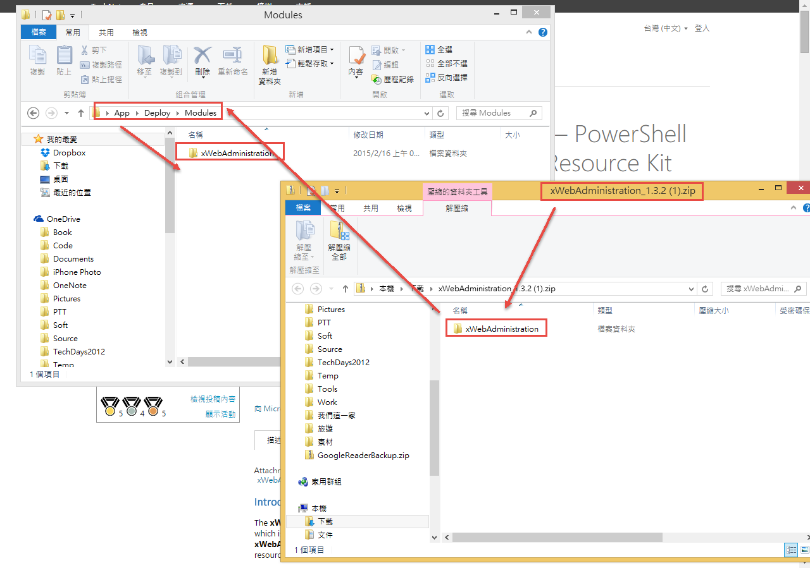
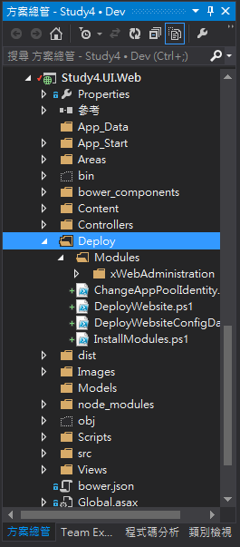
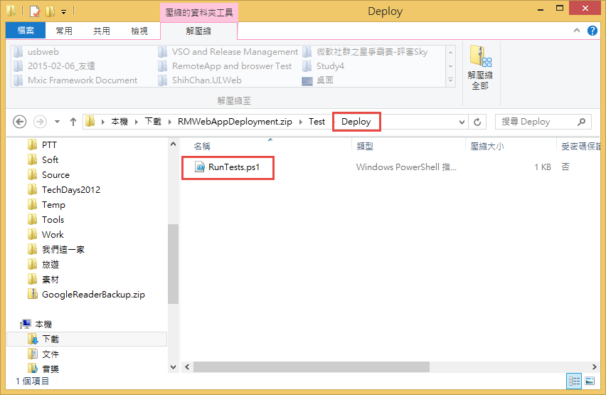
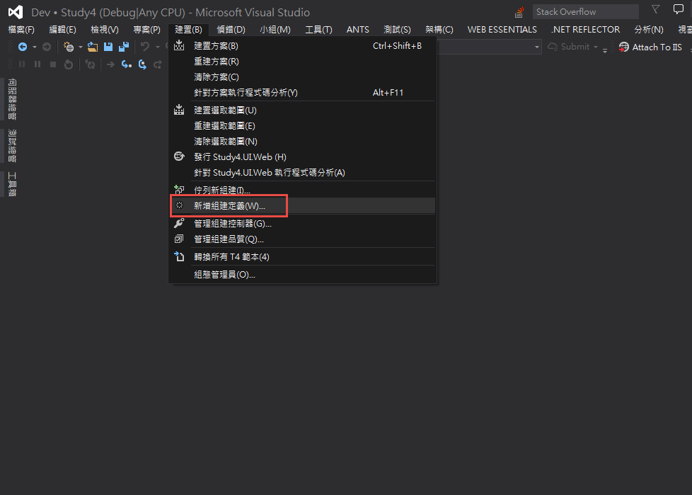
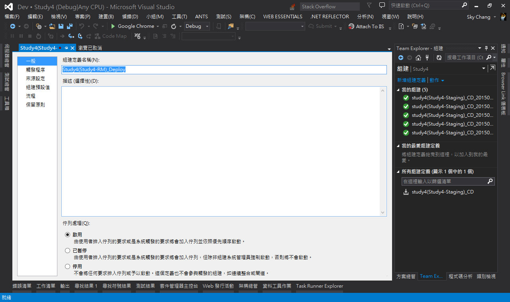
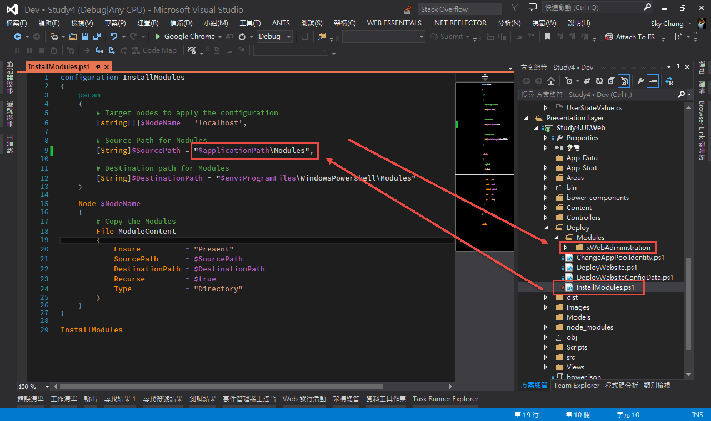

Agent-Less
在開始設定編譯的相關東西之前，有個東西必須先讓大家知道，如果大家有玩過Release Management與地端的Server搭配的話，大家可能會有印象，以前都必須要在目標Server裝上Release Management Agent；而裝了Agent的Server，就可以通知Release Management Server一些相關的資訊，例如，目標Server是否還活著。
處此之外，裝了Agent的Server，還會不停的問Release Management Server，是否有新的佈署，我是否要和Release Management的DB，去下載一些工具，來進行佈署。
OK，到上面為止，那是之前的版本 ( 未來也通用 )，但Release Management的下一個版本，開始支援另外一個模式，那就是Agent-Less模式。
這個模式的特色，就是不用再目標的Server裝上Agent，而是直接透過Release Management Server將PowerShell送去目標Server，然後再由Release Management Server遠端的遙控目標Server來執行此PowerShell ( 透過Remote PowerShell )；這也是為什麼，一開始的Azure VM要裝Release Management套件，那裏面其實就是去安裝PowerShell和開啟遠端執行功能。
所以，換言之，如果是使用Agent-Less模式，那原本MS準備好的XCOPY等…Tool也完全都不能用了…也因此，如果有玩過Release Managment在地端的朋友們，可能就會發現，工具選單完全不見了，只剩下動作選單….
準備PowerShell
因為要使用Azure，就只能使用Agent-Less模式，所以我們這邊要準備PowerShell，大家可以去這裡下載，這個PowerShell的出處來自於微軟的Blog。
那這些PowerShell預計要做哪些事情哩??
- 將Powershell DSC module安裝到目標Server
- 佈署編譯好的最後版本到目標Server
- 設定目標Server Web Site的存取權限
- 跑自動化測試 ( 此篇文章未提，請讀者自行測試。 )
另外，要執行這些PowerShell，需要以下條件。
- 必須擁有WMF 4.0 在目標Server ( 透過Azure的擴充套件，我們已經安裝過了。 )
- 目標Server必須要有vstest.console.exe 才能進行自動化測試，( PowerShell使用 vstest runner 來替代 mstest), 並且將資訊回傳給VSO或TFS，如要安裝 vstest runner 可以到 Visual Studio Test Agent 和 Team Explorer SKUs 到目標Server . ( 此篇文章未提，請讀者自行測試。)
當下載完成後，請注意!!，下載下來的PowerShell其實有點問題，第一個問題是路徑問題，這個問題我們後面會進行解決，第二個問題是xWebAdministration會找不到的問題，關於第二個問題，請去這裡下載新版的xWebAdministration。
目前此篇完成的版本，是使用xWebAdministration 2015/01/06的版本。
當下載完成之後，我們先把微軟Blog下載的那包檔案解壓縮，然後進入到”APP” => “Deploy” => “Modules”，並把xWebAdministration刪掉，然後我們再把下載下來的xWebAdministration整包移到剛剛刪除的那個目錄下，如下圖。

將檔案放置專案
接下來，我們把APP底下的Deploy，整個複製到你要佈署的專案裡面去，如下圖；會這樣做的原因，是因為，Release Management Server只能透過編譯出來的檔案，來傳送到目標Server；也因此，我們把PowerShell放到專案裡面，以利後續透過VSO Build的時候，能順利的讓Release Management Server抓到。

另外，本篇文章目前沒提到測試的部分，但如果有興趣的朋友，可以將測試的PowerShell，如下圖，放到測試的專案裡面去。

設定組建
接下來，我們透過Visual Studio來建立一個新的”組建定義”。

基本上，組建定義的部分，和一般設定沒甚麼兩樣。

接著，我們要打開PowerShell，來解決上面提到的第一個問題。
我們可以看到InstallModules.ps1這個檔案裏面，他預設的Modules路徑為”$applicationPath\Deploy\Modules”，其實這是錯誤的，雖然我們可以從下圖看到，Modules的確在Deploy底下，但實際上，我們佈署這個PowerShell到目標Server的時候，是不會包含Deploy的，也就是說，我們只會把Modules設個目錄放到目標Server，而非Deploy這個目錄。
所以，我們要改成如下圖，並且把Deploy拿掉。

最後，別忘記簽入剛剛加進去的Deply目錄底下的所有東西，和剛剛修改好的InstallModules.ps1。
參考資料
- http://www.visualstudio.com/get-started/manage-your-release-vs
- http://www.visualstudio.com/get-started/deploy-with-agents-vs
- http://blogs.msdn.com/b/visualstudioalm/archive/2014/11/11/using-release-management-vso-service-to-manage-releases.aspx
- http://blogs.msdn.com/b/visualstudioalm/archive/2014/11/12/deploying-and-testing-web-applications-using-release-management.aspx